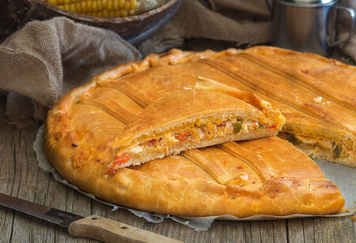

Empanada gallega
La empanada gallega es una variedad de empanada muy popular en la cocina gallega y que forma parte de
una de sus identidades. La primera empanada de la que se tiene referencia es de pollo y champiñones.
Es una preparación culinaria que se ofrece en los municipios de Galicia en las ocasiones de fiesta y
romería. Suele prepararse con diversos contenidos en su interior, todos ellos procedentes de las
costas y tierras gallegas. Se puede servir fría o caliente.
Empanada argentina
Las empanadas argentinas tienen, por lo general, forma de semicírculo de no más de 20 cm de diámetro
y están cerradas por un repulgo o simba (llamado repulgue), que muchas veces presenta distintas
formas que permiten identificar el sabor del relleno. El relleno (también conocido como recado o
carbonada) varía de provincia en provincia, aunque los más comunes son carne vacuna, pollo, humita,
jamón y queso y verdura (generalmente acelga o espinaca) con queso o salsa blanca. Las empanadas de
carne suelen llevar cebolla, huevo duro picado, aceitunas y, en algunas provincias, pasas de uva,
papa o arvejas.

Empanada morcilla
La empanada es una de las elaboraciones más versátiles que puede haber en la gastronomía, no solo
española, sino internacional. Son muchos los países (Argentina, Reino Unido, etc) que cuentan con
sus recetas propias tradicionales que, a su vez, son versionadas y alteradas con distintos tipos de
masas y rellenos. En España, la empanada gallega es la reina del panorama y nosotros somos grandes
defensores de tan delicioso bocado.